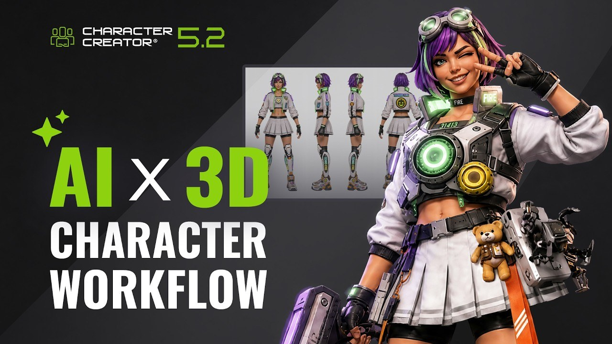

01
CG 軟體更新整理：聚焦 Character Creator 5.2 的圖生模型與 CC Wrap
這篇 11 月 2 日更新整理介紹 Character Creator 5.2：可由一至四張參考圖產生模型，使用 Tripo 與混元模型，另以 CC Wrap 將自製或 AI 人形網格轉成 CC3+／CC5 HD，並在 wrapping 後自動綁定。

其他 DCC ★★★★☆
完整分析
角色生成工作流
圖生模型模組支援角色、服裝、髮型與配件；來源列出 Tripo P2.0 處理低模拓樸，Tripo H3.1 與 Hunyuan V3.1 處理高模細節，另有概念圖生成和四邊形重建功能。
角色製作交接
CC Wrap 可把其他 DCC 雕刻或 AI 生成的人形角色轉成 CC3+ 與 CC5 HD 格式，並在 wrapping 完成後自動綁定；同次更新也增加服裝貼合、蒙皮權重控制與 GLB 匯入。
導入限制
CC Wrap 雖支援全身和臉部，來源仍轉述 Reallusion 建議臉部工作使用另購 Headshot；文章沒有提供跨造型角色的包覆成功率或變形測試，因此不能把自動綁定視為所有角色均免修整。
BRIEF｜來源已驗證；證據深度較有限，完整分析會明確區分已知資訊與待驗證事項。